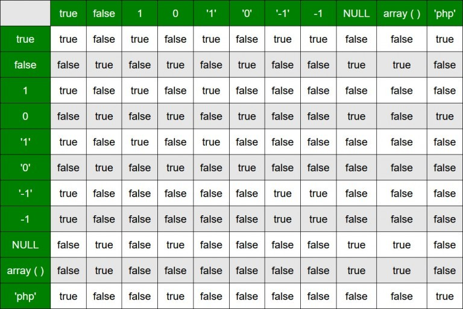
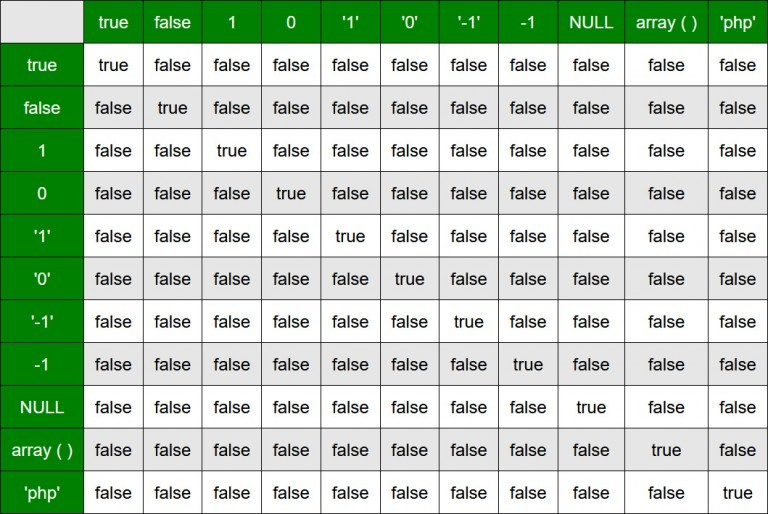

Оператори в PHP
Оператором можна описати деяку дію, яку інтерпретатор має зробити із зазначеними змінними. Оператори входять у більшість виразів і дозволяють змінювати чи порівнювати значення змінних.{kind=link}
Об’єднання рядків
Якщо ви вивчали інші мови програмування, знайомі з оператором «+» для об’єднання рядків. Але в PHP справа зовсім інша. Оператор «+» використовується для арифметичних операцій і рядок автоматично приводиться до числового значення, а для поєднання рядків використовується символ крапки «.».<?php
$number = 123;
echo 'Число: ' . $number; // Число: 123<?php
$number = 123;
echo "Число: {$number}"; // Число: 123<?php
$number = 123;
$str = 'Число: ';
$result = $str . $number; // Число: 123
$result = $str .= $number; // Число: 123Конструкція Echo
За допомогою конструкції Echo можна здійснювати вивід у вікно браузера. Конструкція може приймати один або більше параметрів розділених комою, які вона виводить у вікно браузера.<?php
$number = 123;
echo 'Число: ', $number; // Число: 123Часто замість конструкції Echo використовують рядкову функцію Print, яка дозволяє виводити змінні у вікно браузера, але приймає тільки один параметр, тому в ній не можна наводити параметри через кому. Крім того, функція повертає True у разі успішного виведення змінної, інакше повертається False, на відміну від конструкції Echo, яка не повертає нічого.
Арифметичні оператори
Операції над числами проводяться за допомогою арифметичних операторів: «+» - додавання, «*» - множення, «-» - віднімання, «/» - ділення, «%» - ділення за модулем, «**» - зведення в ступінь, «++» – збільшення на одиницю (інкремент), «--» – зменшення на одиницю (декремент).Оператори складання, віднімання, множення і ділення використовуються за правилами, прийнятим в арифметиці: спочатку виконуються оператори множення та ділення і лише потім оператори складання та віднімання. Щоб змінити такий порядок, слід вдаватися до групування чисел за допомогою круглих дужок.
У PHP, якщо при операції ділення одного цілого числа на інше виходить дробове число, результат автоматично приводиться до дійсного типу. Щоб отримати ціле значення, потрібно явно привести результат ділення до цілого типу або з допомогою конструкції (int), або з допомогою функції Intval. Також можна налаштувати кількість цифр після крапки (за замовчуванням 12) до необхідного значення директивою Precision у конфігураційному файлі php.ini.
Крім описаних вище операторів, можна також використовувати «скорочений запис» арифметичних операторів. Тобто вираз $а = $а + $b у скороченій формі запишеться як $а += $b, що означає «привласнити операнду лівої частини суму значень лівого та правого операндів». Аналогічні дії допустимі всім наведеним вище операторам («+=», «*=», «-=», «/=», «%=», «**=», «.=»).
Операції, залежно від кількості операндів, що беруть участь, поділяють на унарні та бінарні. Унарна операція працює з одним операндом, бінарна – з двома. Усі арифметичні операції, крім операцій інкременту та декременту, є бінарними.
Оператори інкременту «++» та декременту «--» поділяють на префіксні «++$var» та постфіксні «$var++». При префіксній операції інкременту збільшення значення операнда на одиницю відбувається до того, як повертається значення. Відповідно, при постфіксній – після.
<?php
// Префіксна форма:
$var = 1;
echo ++$var; // 2
// Постфіксна форма:
$var = 1;
echo $var++; // 1
echo $var; // 2Оператори «++» і «--» застосовуються не тільки до цілісних змінних. Наприклад, можна виконувати операції зі рядковими значеннями:
<?php
$var = 'a';
echo ++$var; // bПорозрядні оператори
Порозрядні оператори, вони ж бітові оператори, призначені до виконання маніпуляцій над окремими бітами числових значень: «&» - відповідає побітовому «і» (AND); «|» - порозрядне об’єднання «АБО» (OR); «^» - порозрядне виключає «АБО» (XOR); «~» - порозрядне заперечення (NOT); «<<» - зсув вліво бітового уявлення значення лівого цілісного операнда на кількість розрядів, що дорівнює значенню правого цілісного операнда; «>>» - зрушення вправо бітового уявлення значення лівого цілісного операнда на кількість розрядів, що дорівнює значенню правого цілісного операнда.Операції над бітовими операторами виконуються над числами у двійковому поданні. Наприклад, бітова операція «&» (і) над числами 5 і 6 дасть результат 4:
<?php
echo 5 & 6; // 40101
0110
0100Оператор «|» відповідає побітовому «АБО» (перетин). Застосовуючи операцію «|» до чисел, розглянутих раніше, отримаємо в результаті 7:
<?php
echo 5 | 6; // 70101
0110
0111Оператор «^» відповідає побітовому виключає «АБО» (XOR).
<?php
echo 5 ^ 6; // 30101
0110
0011Оператор заперечення «~» є побітовою інверсією та замінює всі 0 на 1 і навпаки.
<?php
echo ~6; // -70110 (6)
1001 (-7)00000000000000000000000000000110 (6)
11111111111111111111111111111001 (-7)Оператор «<<» зсуває вліво всі біти першого операнда на число позицій, зазначене у другому операнді. Зсув на від’ємне значення призводить до нульового результату.
<?php
echo 5 << 6; // 320 000000101 (5)
101000000 (320)<?php
echo 5 >> 1; // 2000000101 (5)
000000010 (2)Оператори порівняння
Оператори порівняння виконують порівнювання заданих значень та повертають True (істина) або False (брехня). Виняток становить лише оператор «<=>», який повертає ціле число. Оператор «<» - оператор «менший», повертає True, якщо змінна, вказана в лівому аргументі, має значення строго менше значення правої змінної. «<=» - оператор «менше або рівне», повертає True, якщо змінна, вказана в лівому аргументі має значення менше або дорівнює правому аргументу. Оператор «>» - «більше», працює аналогічно оператору «<», за винятком зміни сторін аргументів. Оператор рівності «=» та його еквівалент «<>» повертає True, якщо значення змінних по обидва боки рівні. Оператор «!=» нерівності повертає True, якщо значення змінних різні. Оператор еквівалентності «===», повертає True, якщо значення та тип змінних рівні. Оператор нееквівалентності «!===», повертає True, якщо значення, або тип змінних не рівні. Оператор «<=>» у разі рівності змінних повертає 0, якщо лівий аргумент більший за правий повертається позитивне число 1, якщо менше – від’ємне -1.<?php
echo 2 > 1; // true
echo 2 > 3; // false
echo 2 >= 2; // true
echo 1 < 0; // false
echo 2 < 2; // false
echo 2 <= 2; // true
echo 1 == 0; // false
echo 1 == 1; // true
echo 1 != 0; // true
echo 1 != 1; // false
echo 0 == 'abc'; // true
echo 0 == ''; // true
echo 0 === ''; // false
echo 0 == null; // trueОписані оператори мають пріоритет виконання, наприклад, операції «==» і «!=» мають нижчий пріоритет порівняно з іншими.
Наведемо таблиці порівняння різних величин за допомогою операторів рівності «==»:

{kind=link}
Таблиці порівняння різних величин за допомогою операторів рівності «===»:
{kind=link}

{kind=link}
Пріоритет виконання операторів
Наведемо список операторів залежно від пріоритету виконання. Оператори з нижчим пріоритетом розташовані нижче, з вищим - вище. Оператори, розташовані на одному рядку, мають однаковий пріоритет, і виконується насамперед той із операторів, який зустрічається у виразі першим.clone new
[]
**
++ --~(int) (float) (string) (array) (object) @
instanceof
!
* / %
+ - .
<< >>
< <= > >=
== != === !== <> <=>
&
^
|
&&
||
??
?:
= += -= *= /= /= %= &= |= ^= <<= >>=
and
xor
or
,